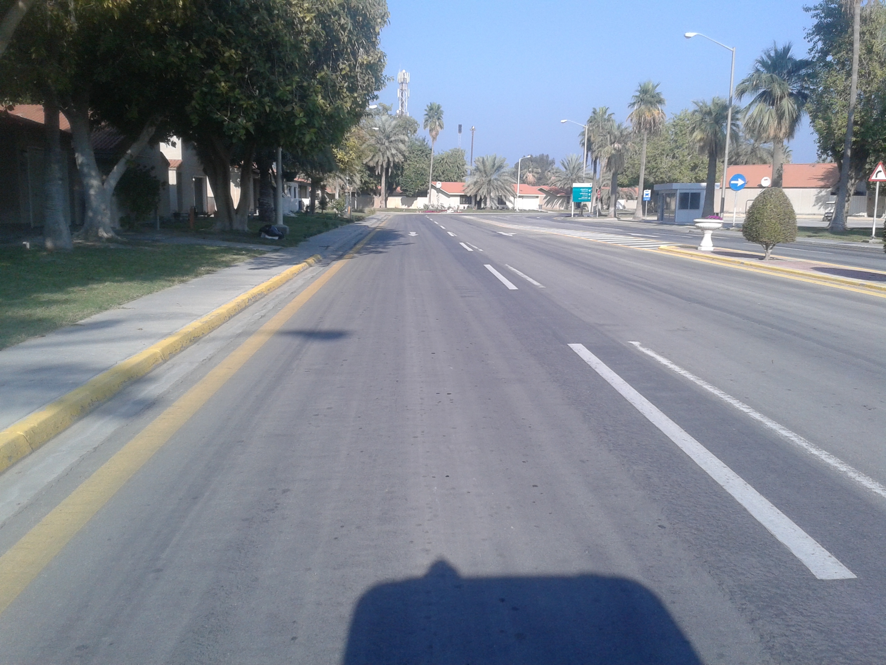
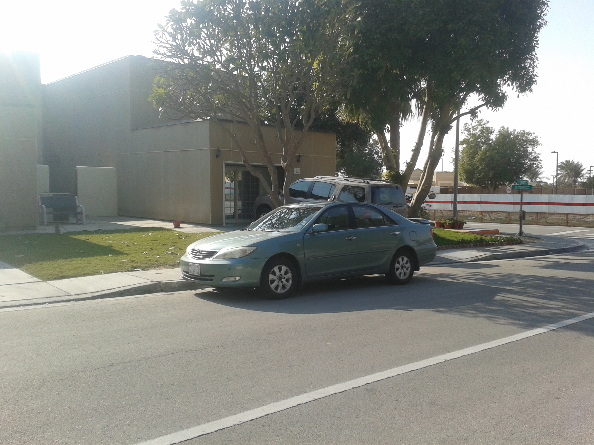
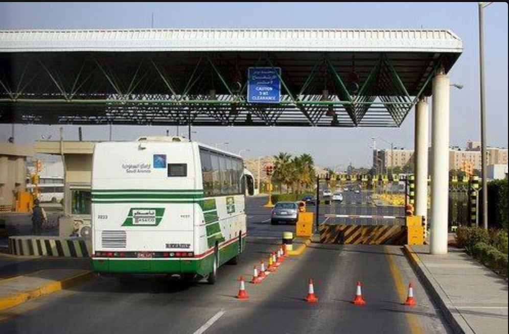
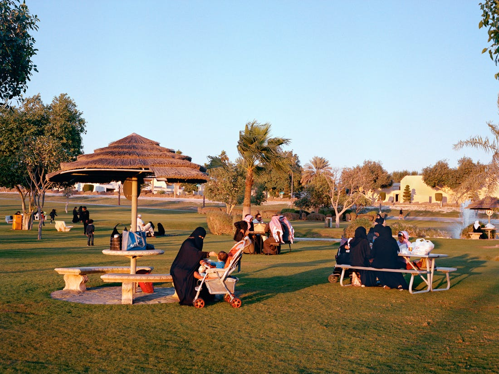

"Grass Doesn't Grow in the Desert"
A map-based storytelling project

Arabs don’t really golf.
But here we are, in Saudi, in the middle of a desert. A proper golf course, lush grass and all. Multi-million dollar project. Empty.
But here we are, in Saudi, in the middle of a desert. A proper golf course, lush grass and all. Multi-million dollar project. Empty.
We don't come here to golf though. We come here to hide. Late at night. Find a hole in the grass, sit down, and hang out.
Let me show you some of my other frequented spots. Like: the ‘Dining Hall’.
Building names are literal here: Dining Hall, Snack Bar, Office. Corporate building 119, 120.

I'm walking with a tray of waffles on my plate. Around me, some suits. Some abayas. Some t-shirts. We find a corner so we can talk about last weekend. Hoping our parents are not there. Or their friends. Eyes are everywhere.
Okay. I'm done eating. Let's drive to my house.

The roads here are paved perfectly, palm trees spaced out evenly in the median. Bushes covering the desert.
The roads are ingrained in my memory. Slow down for the security cameras. Watch the trap on King's Road. And speed everywhere in between.

I'm blasting Kendrick in the car, but I turn down the volume when I pass the mosque near me house. The bass and athan seem incompatible.
Okay. I'm home.

But I can't let you in.
I don't really like having people over. It's a bit awkward. Watching what I say, watching what you say. Making sure they don't know.
I don't really like having people over. It's a bit awkward. Watching what I say, watching what you say. Making sure they don't know.
Let's step outside. Let me explain where we are.
Saudi Aramco compound, Dhahran, Saudi Arabia.
Population: 15,000, employees and families affiliated with the world's largest oil company.
Everyone living in the same confined corporate town. Upper middle class. Saudi mostly, but lots of foreigners too.
Population: 15,000, employees and families affiliated with the world's largest oil company.
Everyone living in the same confined corporate town. Upper middle class. Saudi mostly, but lots of foreigners too.



My family moved here from Florida in 2003. Post 9/11, a safe haven from the US. People who talk like us, look like us, share the same values. A bubble with its rules and laws, not quite Western, not quite Saudi.

A safe space - built on oil, the destruction of the environment, and migrant worker exploitation.
In my childhood though, it felt like suburbia. We were living the American dream in Saudi. Two cars, a stable home. American education, American sports. It felt more Western in some ways than Florida, where I only ever interacted with other Muslims in our small community.